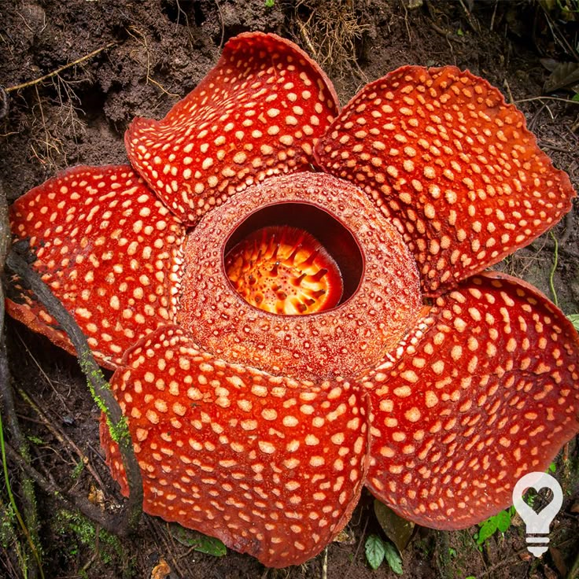
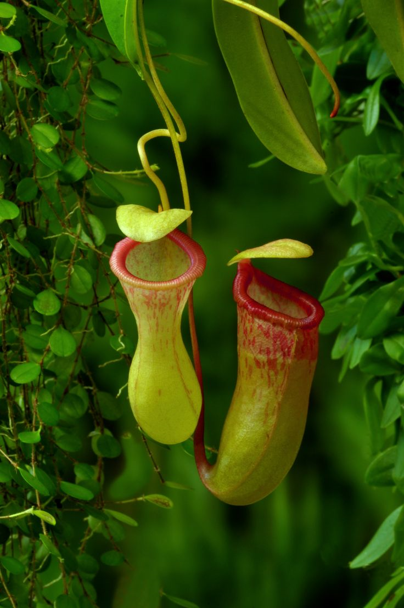
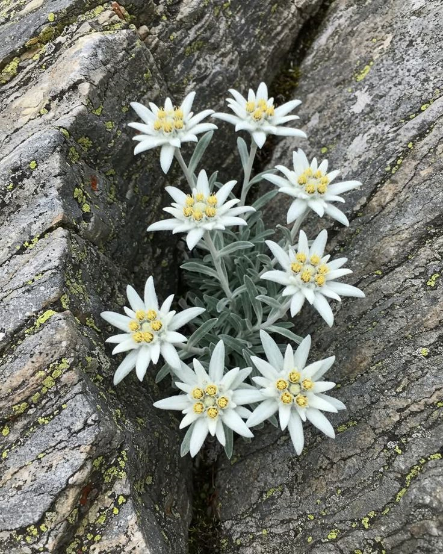

Tanaman terancam punah
Lihat semua

Rafflesia arnoldii
Rafflesia arnoldii (padma raksasa) adalah tumbuhan parasit obligat yang memegang rekor sebagai bunga tunggal terbesar di dunia. Bunga ini pertama kali ditemukan di Bengkulu pada tahun 1818 oleh Dr. Joseph Arnold dan Sir Thomas Stamford Raffles.

Kantong semar
Kantong semar (genus Nepenthes) adalah tumbuhan karnivora unik yang menggunakan daun yang termodifikasi menjadi kantong untuk menangkap mangsa. Nama "kantong semar" diberikan karena bentuk kantongnya yang bulat menyerupai perut tokoh pewayangan Semar.

Edelweiss
Edelweiss Jawa (Anaphalis javanica) adalah tumbuhan gunung endemik Indonesia yang dikenal luas sebagai "bunga abadi". Julukan ini diberikan karena bunga edelweiss mengandung hormon etilen yang mencegah kerontokan kelopak, sehingga bunganya tetap tampak segar dan tidak layu selama bertahun-tahun meskipun telah dipetik dan kering.